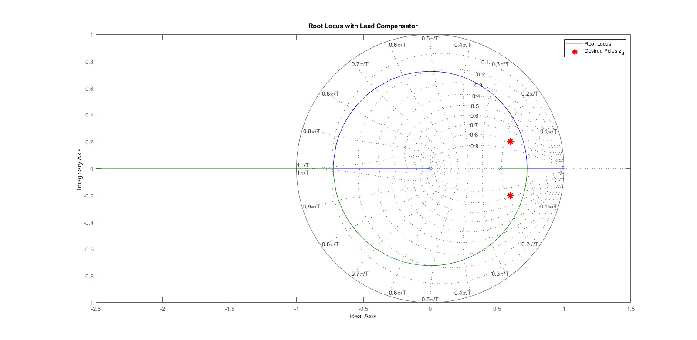
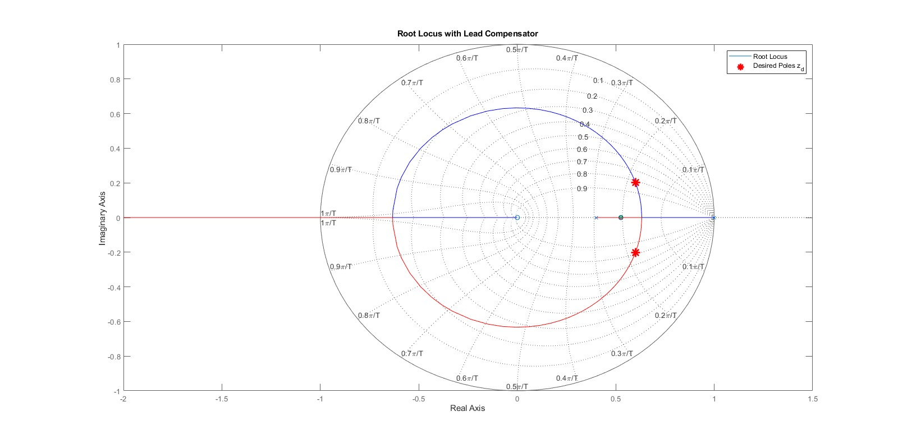
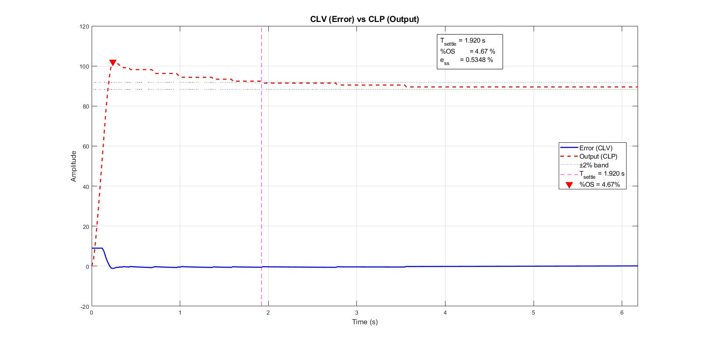

Overview
For a given dc motor with an quadrature encoder, the goal of this project was to control position by modelling the system and designing a lead lag compensator. The required response had a settling time under 2 seconds, an over shoot of under 5%, and a steady state error of under 3%.
System characteristic
The system involved a 12v dc motor with 34:1 gear ratio, that had a quadrature encoder. To drive it, a tbfng6612 h bridge was used. The system was to be controlled with an Arduino mega, using the Simulink add-on for Arduino.
System modelling
To model the system a block diagram was constructed in MATLAB that accurately fits our plant, the encoder changes where to be interpreted as an interrupt then counted to decrement position or increment it depending on the other quadrature pin. I constructed oscillation feedback, where the motor constantly 180 degrees and back. The idea was, to collect data about the response of the motor, then feed that response into MATLAB system identifier.
In the video below, you can see the dc motor oscillating to collect data about its response.
Demo Video
Watch the project in action on YouTube.
From the data we got, we were able to find the transfer function of our system using the matlab system identifier.
\[ \frac{\theta}{V} = \frac{.6411z}{z^2 - 1.525z + .5254} = \frac{.6411z}{(z - .999156)(z - .52584)} \]
This result is physically logical, as a dc motor's position is semi stable requiring a pole at 1, and a faster pole at .525 describes the mechanical transient. The matlab system identifier indicated a fit of over 95.83% to our collected data, a great result
Design of lead lag compensator
Designing the controller then involved drawing the rootlocus with the desired pole locations, then following the design steps. Observe that prior to lead compensator, the poles locations did not fall on the rootlocus, but after they did.


Results
After desiginng the lead lag compensator, the response met our requirments beautifully:

Reflecting on this project, the main challenge I faced was in the system modelling, where it took a long time to achieve this strong fit. To do so, I had to tune the measuring setup for a bigger amplitude, faster freq, and other. This project also challenged my intuition of digital control, as I recognized how quickly non idealities affect a real plant. For example, in theory the settling time to move 45 degrees and 180 should be identical, but this isn't true due to voltage saturation; the dc motor can only accept a maximum rated voltage. Moving forward, I would like to investigate modelling and applied control more.